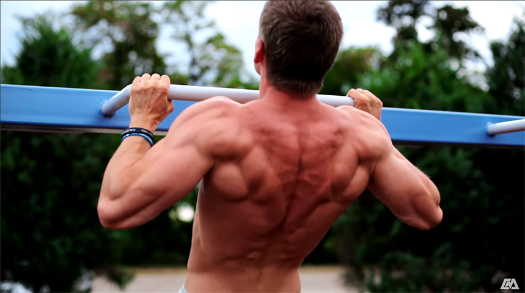
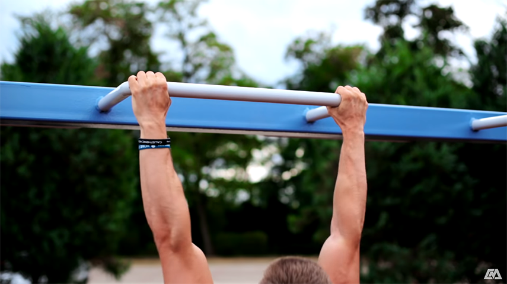
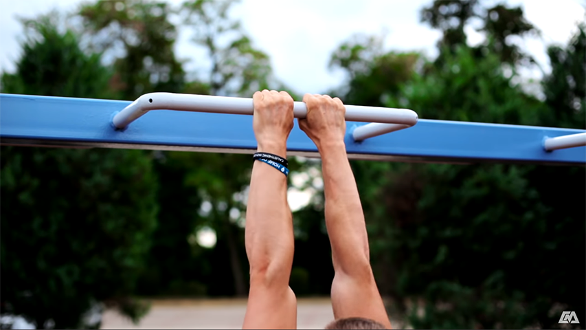
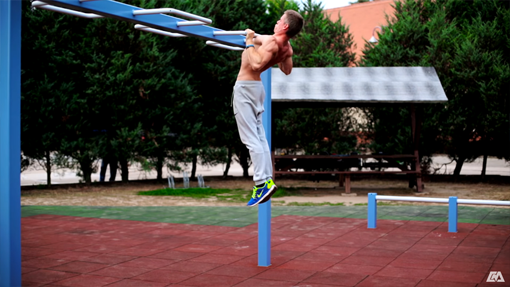

The most important part of doing a pull up is grabbing the bar. So stop wasting time and grab it.
Shoulders Down and Back
Before you start pulling you should ensure that your shoulders are down and pulled back. This helps engage the muscles in your back, ensure you are working the correct muscles in your shoulders and chest, as well as help prevent injury. You should ensure that you maintain this shoulder position and tension all the way up and down.
Full Extension
Full extension is key to a quality pull up. Working out isn't about cheating so it does no one any good to cheat reps. Ensure that your arms are straight when you are at the bottom of the pull up and your chest touches the bar at the top. Getting a full range of motion in your pull up will not only make you stronger but will also prepare you for more difficult pull up variations in the future.

Wide Grip
A wide grip is probably the most standard pull up grip. When you are doing a wide grip you want to make sure you don't go too wide because you will put unnecessary strain on your elbows. When doing a wide grip you should aim for a little wider shoulder width. The wide grip variation has the advantage of working your lats harder.

Close Grip
The close grip pull up is a great variation of the pull up. As with all pull up variations you get a large and dynamic muscle workout. When doing close grip you can have them as close together as you would like depending on the muscles you are trying to focus on. This Exercise will work your lower lats and pecs harder.

Arched Back
Though body position primarily comes down to preference, there are some major differences. Having your back arched allows for a focus of muscles. Because you are not attempting to offset your center of gravity you put more weight on the muscles you are trying to workout.

Straight Back
Straight back pull ups are an extremely good exercise that have multiple advantages. Having your back straight will require you to extend your legs forward and tighten your butt which will work your core as well as several other muscles. Though position is mostly preference it is good to change up your position occasionally in order to work new muscles.